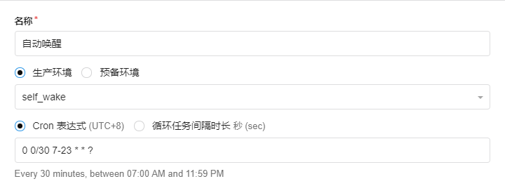
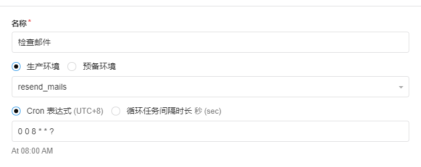

前言
本博客建成于2018年（夏），当时是在我高中毕业的那个暑假，虽然对于这些代码等知识，还不了解，但凭着对于这种东西的热爱，还是废寝忘食的完成了。
但完成后的我发现，相比起写博客，我还是喜欢建设博客的过程，那种一点一点美化/优化的过程。所以建站快两年，日志还是就那几篇。。。惭愧。
更新总览
- 更新前版本：
Hexo-3.7.1NexT-5.1.4 - 更新后版本：
Hexo-4.2.0NexT-7.8.0
经过两年的更新，NexT主题相比原来集成了很多插件，比起当时，此版本在美化和优化设置上要简单得多。但相对的，更新起来更加的麻烦（主要是原来的设置/拓展过多），用git pull平滑更新会报错，只能手动更新，但也是个大工程。
所以，考虑到我的日志并不多，主要的美化还是在custom.swig文件中，以及我想用一下数据文件（ Data File )，最后我决定直接放弃原来的版本，重新建设新版本，原来的日志手动升级过来。
数据文件
自从 NexT-7.3.0 开始，官方推荐采用数据文件将配置与主题分离，这样可以在不修改主题源码的同时完成选项配置自定义布局自定义样式，便于后续 NexT 版本更新。
更新内容
多评论系统：Valine/Gitalk 部署到 Coding 国内外分流 脚注 hexo-reference Github 贡献图 404页面 Followme 分享 折叠 暗/亮 谷歌日历 徽章 字体 主题样式 简繁切换 多级菜单 置顶 近期文章 博客备份 打字效果 点击效果 建站时间 页面宽度修改 BiliBili 追番列表 添加阿里图标 Steam 游戏标签
新增加内容（较前版本）
多评论系统
Next 现已支持多评论系统，原来我用的 Valine 评论系统，这次更新我尝试了 Gitalk 与 Disqus 评论，由于 Disqus 评论系统对于国内IP不是很友好（虽有 Disqus js 代理评论系统，但也没有太大实际用途），所以我放弃了 Disqus ，从而使用 Gitalk 与 Valine 双评论系统。
1 | # Multiple Comment System Support |
Valine


1 | # Valine |
本博客 Valine 样式
1 | //以下为亮/暗通用样式 |
邮件提醒
1 | MAIL_SUBJECT: ${PARENT_NICK}，您在${SITE_NAME}上的留言收到了回复 |

定时任务
自动唤醒

检查邮件

添加自定义表情
Valine 支持自定义表情[10]
1 | valine: |
Gitalk


1 | # Gitalk |
本博客 Gitalk 样式
1 | //以下为亮/暗通用样式 |
Followme
1 | # Subscribe through Telegram Channel, Twitter, etc. |
本博客 Followme 样式
1 | //follwome |
404页面
由于本博客以前是发布在 Github 上，所以404页面默认是 Github 样式的，与博客不太搭，所以我加了一个自定义的404页面
下面是方法
在
博客\source下创建404文件夹,将自定义代码放入下面 Front-matter 的下面（以本博客的404代码为例）位置：博客\source\404\index.md（自行创建） 1
2
3
4
5
6
7
8
9
10
11
12
13
14
15
16
17
18
19
20
21
22
23
24
25
26
27
28
29
30
31
32
33
34
35
36
37
38
39
40
41
42
43
44
45
46
47
48
49
50---
permalink: /404 # 强制链接为404
comments: false # 关闭评论
layout: true # 是否以主题样式渲染
---
<div class="notfound"style="font-family:Source Code Pro;">
<span style="display:block;">
(<span style="color: #2796ec;">function</span>( inDevelopment ) {
</span>
<span style="display:block;">
<span style="padding-left: 15px;color: #2796ec;">function</span> launch() {
</span>
<span style="display:block;">
<span style="padding-left: 30px;color: #2796ec;">if</span>( inDevelopment ) {
</span>
<span style="display:block;">
<span style="padding-left: 45px;color: #2796ec;">return;</span>
</span>
<span style="display:block;padding-left: 30px">}</span>
<span style="color: #757575a2;font-style:italic; display:block;padding-left: 30px">//TODO</span>
<span style="display:block;padding-left: 15px">}</span>
<span style="display:block;">
window.addEventListner( <span style="color: #e99d47;">'load'</span>, launch );
</span>
<span style="display:block;">
}( <span style="color:#2796ec;">true</span> ));
</span>
<span style="color: #757575a2;font-style:italic; display:block;">// 404 page not found.</span>
<span style="display:block;">
<span style="color:#d65562;">if</span>(<span style="color:#4ca8ef;">!</span><span style="font-style: italic;color:#9c9c9c;">found</span>) {
</span>
<span style="display:block">
<span style="padding-left: 15px;color:#2796ec;">throw</span>(<span style="color: #8e7ccf;">"(╯°□°)╯︵ ┻━┻"</span>);
</span>
<span style="display:block">}</span>
<span style="color: #757575a2;font-style:italic;">// <a href="/">Go home!</a></span>
</div>可能遇到的问题及解决方法
404页面只在一级域名下一级子路径下能正常跳转显示，在二级及以上子路径下无法正常显示
解决方法: 不要使用相对路径对依赖文件进行调用！！！使用链接形式对依赖文件进行调用
例如1
2<!---href="css样式地址"--->
<link rel="stylesheet" href="https://coldcard.wang/404/404.css">按照很多博文描述的思路，将 html 依赖的 css 文件和 js 文件放在
博客\source文件夹下或者博客\source\你创建的page文件夹下，在经过 hexo g 生成和 hexo d 上传后，无法正常调用依赖的两个文件解决方法：将依赖的 js 和 css 依赖文件放到
主题\source文件下，而不是博客\source文件夹或博客\source\你创建的page文件夹中
多级菜单
1 | # Usage: `Key: /link/ || icon` |
近期文章
将以下代码复制到博客\_data\sidebar.swig
1 | {% if theme.recent_posts %} |
将以下代码复制到博客\_data\next.yml或者主题\_config.yml
1 | # 近期文章 |
将主题\_config.yml做出以下修改（开启数据文件）
1 | ··· |
简繁切换
将以下 js 代码复制到主题\source\js\tw_cn.js文件中
js 代码
1 | var defaultEncoding = 2; // 网站默认语言，1: 繁體中文, 2: 简体中文 |
将以下内容复制到你想要放置切换开关的地方（我放到了脚页footer.swig中）
1 | <div class="translate-style"> |
脚注 hexo-reference


Markdown 基本语法中并不包含脚注语法，但是脚注作为一种常见的文本格式，对于文字编辑工作者，特别是喜欢插入引文的人而言，有着很大的使用需求。所以 Multi-Markdown 在其扩充语法集中增添了脚注的语法。大部分的 Markdown 编辑器现在都采用了该语法来渲染脚注。但 Hexo 的默认渲染器是不支持脚注语法的。
所以本博客使用 hexo-reference 插件实现脚注功能。
- 本博客脚注样式
位置：博客\source\_data\styles.styl（没有则自建） 1
2
3
4
5
6
7
8
9
10
11//脚注
.hint--error:after {
background-color: #917bb8 !important;
text-shadow: 0 1px 3px #000000 !important;
}
.hint--error.hint--top-left:before, .hint--error.hint--top-right:before, .hint--error.hint--top:before {
border-top-color: #917bb8 !important;
}
#footnotelist {
font-weight: 300 !important;
}
页面宽度修改
1 | $content-desktop = 60em; |
部署到 Coding 国内外分流
设置
1 | # Deployment |
解析[9]
/%E8%A7%A3%E6%9E%90.png)
暗、亮
本博客已支持 亮/暗 样式切换，可根据“系统亮暗主题”或“浏览器亮暗主题”自动切换（其实还想加个手动切换，但是至今没找到合适的方法）。1 | # Dark Mode |
自定义样式可参考本博客的styles.styl
Github 贡献图
所用到的 Github Chart API
徽章
徽章是一种小巧精美的小图标,一般配有相关文字进行辅助说明,富有表现力。
类似文章开头和脚页上的徽章图片。
本博客使用的徽章生成网站 shields.io ,这也是 Github 使用的徽章网站。
PJAX
该项功能的作用是：跳转到同网站另一个页面的时候，前后两个页面相同的元素不再重复加载，进而节省了加载的时间，加快访问速度。
开启 PJAX 后或多或少会出现出现浏览上的 BUG，特别是一些使用 JavaScript 的地方。我没有深入研究过该项功能的原理，所以也无法修复一些出现的 BUG。
1 | # Easily enable fast Ajax navigation on your website. |
博客备份
需要备份的文件及文件夹：scaffoldings[2] source[3] themes[4] .gitignore[5] _config.yml[6] gulpfile.js[7] package.json[8]
Git 命令
1 | git clone ... # 克隆仓库 |
备份到 Github
已备份到 Github 的 BackUp 仓库
备份到 Coding
已备份到 Coding 的 Hexo 仓库
谷歌日历
NexT 主题为schedule页面添加了index功能，使用 Google Calendar API 实现日程显示，正好我也经常在 Google Calendar 上记录日程、课程表之类的，所以就设置了一下。
1 | # Google Calendar |
方法
首先打开 Google Developer Console 的 API 和服务，需要科学上网，登录自己的 Google 账号
新建一个 Project（项目）
然后点击启用 API 和服务，在里面搜索 Calendar ，启用 API
启用后回到刚刚的 Google Developer Console 的 API 和服务界面，左侧点击凭据，创建凭据，选择 API 密钥之后，会自动创建一个 API 密钥
名称：随意
应用限制：HTTP引荐来源网址（网站）
网站限制：博客日程页面网址，最好也加上http://localhost:4000/other/schedule/本地网址（方便调试）
API 限制：随意得到 API Key 复制到
_config.yml中到谷歌日历设置中找到你想要显示的日历的“日历 ID”
calendar_id（一般是谷歌账号邮箱）复制到_config.yml中勾选公开此日历
本博客谷歌日历样式
1 | //日程 |
BiliBili 追番列表
Hexo-bilibili-bangumi


将下面的配置写入站点的配置文件_config.yml里 (不是主题的配置文件)
1 | bangumi: |
- 需要将追番列表设置为公开
- 在
hexo generate或hexo deploy之前使用hexo bangumi -u命令更新番剧数据 - 删除数据
hexo bangumi -d
本博客追番列表样式
1 | //追番 |
添加阿里图标
打开 iconfont
选择图标，添加入库
选择
Font class，生成 css 链接可以下载到本地，也可以链接引入（本博客使用后者）
引入 css 样式
位置：博客\source\_data\head.swig（没有则自建） 1
<link rel="stylesheet" href="https:生成的 css 链接">
使用
1
2
3
4
5// 与 Font Awesome 格式一样
<i class="iconfont icon-图标名"></i>
*** || iconfont icon-图标名
Steam 游戏标签
Hexo-tag-steamgame


使用方法
1
2
3
4
5
6
7
8
9
10
11
12
13
14
15
16{# 单个插入 #}
{% steamgame appid description %}
{# 批量插入 #}
{% steamgames %}
appid
appid
appid
···
appid
appid
appid
{% endsteamgames %}
{# appid: Steam 游戏 appid #}
{# description(可选): 用于替换默认游戏简介 #}
升级内容（较前版本）
置顶
原博客采用插件hexo-generator-index-pin-top,但要使用此插件就要将原本的hexo-generator-index插件卸载，这次升级，我发现原来的插件就有置顶功能，只是此置顶功能只能在文章标题前加一个图标，并不能置顶。
所以要实现置顶功能，就要修改以下内容
1 | ; |
分享
AddThis
1 | # AddThis Share. See: https://www.addthis.com |
本博客 AddThis 样式
1 | //addthis |
字体
Google Fonts 分别在 11 月 18 日和 12 月 07 日提供了思源黑体和思源宋体的简繁支持，而且高达 6 种字重支持，其中思源宋体更是高达 7 种字重。对于中文书籍，宋体一直是正文印刷的标准字体，而不是目前电子显示屏上普遍的黑体，因为宋体的衬线更适合长时间阅读。
所以我将文本字体设为思源宋体Noto Serif SC，而代码字体设为Source Code Pro,因为想加点花样，所以将全局字体设为ZCOOL KuaiLe。
1 | font: |
1 | $font-family-chinese = "Noto Serif SC", "PingFang SC", "Microsoft YaHei"; |
要实现上述设置，则要将字体样式链接放入head.swig
1 | <link href="https://fonts.loli.net/css2?family=Noto+Serif+SC:wght@200;300;400;500;600;700;900&family=Source+Code+Pro:ital,wght@0,200;0,300;0,400;0,500;0,600;0,700;0,900;1,200;1,300;1,400;1,500;1,600;1,700;1,900&family=ZCOOL+KuaiLe&display=swap" rel="stylesheet"> |
折叠
升级前本博客的折叠功能有些 BUG ，是由于打开新页面由于 PJAX 的原因，JS 脚本没有加载或加载错误导致的反复开折（解决方法为刷新页面）。
本次升级更换了实现折叠功能的方法（ html5 的<summary>标签），实现方法如下
创建 js 代码
1 | ; |
创建 css 样式（以我的为例[1]）
1 | //折叠 |
使用方法
1 | {% folding 参数（可选）, 标题 %} |
原折叠功能实现方法（与 PJAX 有些冲突）
建立 folding 标签
1 | /* global hexo */ |
1 | $(document).ready(function(){ |
1 | {# 折叠 #} |
1 | {% fold %} |
本博客原折叠样式
1 | // 代码折叠功能添加 |
点击效果
很多博客使用的四种效果（可按需求复制）
js 代码
礼花
1 | class Circle { |
爆炸
1 | ;function updateCoords(e){pointerX=(e.clientX||e.touches[0].clientX)-canvasEl.getBoundingClientRect().left,pointerY=e.clientY||e.touches[0].clientY-canvasEl.getBoundingClientRect().top}function setParticuleDirection(e){var t=anime.random(0,360)*Math.PI/180,a=anime.random(50,180),n=[-1,1][anime.random(0,1)]*a;return{x:e.x+n*Math.cos(t),y:e.y+n*Math.sin(t)}}function createParticule(e,t){var a={};return a.x=e,a.y=t,a.color=colors[anime.random(0,colors.length-1)],a.radius=anime.random(16,32),a.endPos=setParticuleDirection(a),a.draw=function(){ctx.beginPath(),ctx.arc(a.x,a.y,a.radius,0,2*Math.PI,!0),ctx.fillStyle=a.color,ctx.fill()},a}function createCircle(e,t){var a={};return a.x=e,a.y=t,a.color="#F00",a.radius=.1,a.alpha=.5,a.lineWidth=6,a.draw=function(){ctx.globalAlpha=a.alpha,ctx.beginPath(),ctx.arc(a.x,a.y,a.radius,0,2*Math.PI,!0),ctx.lineWidth=a.lineWidth,ctx.strokeStyle=a.color,ctx.stroke(),ctx.globalAlpha=1},a}function renderParticule(e){for(var t=0;t<e.animatables.length;t++)e.animatables[t].target.draw()}function animateParticules(e,t){for(var a=createCircle(e,t),n=[],i=0;i<numberOfParticules;i++)n.push(createParticule(e,t));anime.timeline().add({targets:n,x:function(e){return e.endPos.x},y:function(e){return e.endPos.y},radius:.1,duration:anime.random(1200,1800),easing:"easeOutExpo",update:renderParticule}).add({targets:a,radius:anime.random(80,160),lineWidth:0,alpha:{value:0,easing:"linear",duration:anime.random(600,800)},duration:anime.random(1200,1800),easing:"easeOutExpo",update:renderParticule,offset:0})}function debounce(e,t){var a;return function(){var n=this,i=arguments;clearTimeout(a),a=setTimeout(function(){e.apply(n,i)},t)}}var canvasEl=document.querySelector(".fireworks");if(canvasEl){var ctx=canvasEl.getContext("2d"),numberOfParticules=30,pointerX=0,pointerY=0,tap="mousedown",colors=["#FF1461","#18FF92","#5A87FF","#FBF38C"],setCanvasSize=debounce(function(){canvasEl.width=2*window.innerWidth,canvasEl.height=2*window.innerHeight,canvasEl.style.width=window.innerWidth+"px",canvasEl.style.height=window.innerHeight+"px",canvasEl.getContext("2d").scale(2,2)},500),render=anime({duration:1/0,update:function(){ctx.clearRect(0,0,canvasEl.width,canvasEl.height)}});document.addEventListener(tap,function(e){"sidebar"!==e.target.id&&"toggle-sidebar"!==e.target.id&&"A"!==e.target.nodeName&&"IMG"!==e.target.nodeName&&(render.play(),updateCoords(e),animateParticules(pointerX,pointerY))},!1),setCanvasSize(),window.addEventListener("resize",setCanvasSize,!1)} |
爱心
1 | !function(e,t,a){function n(){c(".heart{width: 10px;height: 10px;position: fixed;background: #f00;transform: rotate(45deg);-webkit-transform: rotate(45deg);-moz-transform: rotate(45deg);}.heart:after,.heart:before{content: '';width: inherit;height: inherit;background: inherit;border-radius: 50%;-webkit-border-radius: 50%;-moz-border-radius: 50%;position: fixed;}.heart:after{top: -5px;}.heart:before{left: -5px;}"),o(),r()}function r(){for(var e=0;e<d.length;e++)d[e].alpha<=0?(t.body.removeChild(d[e].el),d.splice(e,1)):(d[e].y--,d[e].scale+=.004,d[e].alpha-=.013,d[e].el.style.cssText="left:"+d[e].x+"px;top:"+d[e].y+"px;opacity:"+d[e].alpha+";transform:scale("+d[e].scale+","+d[e].scale+") rotate(45deg);background:"+d[e].color+";z-index:99999");requestAnimationFrame(r)}function o(){var t="function"==typeof e.onclick&&e.onclick;e.onclick=function(e){t&&t(),i(e)}}function i(e){var a=t.createElement("div");a.className="heart",d.push({el:a,x:e.clientX-5,y:e.clientY-5,scale:1,alpha:1,color:s()}),t.body.appendChild(a)}function c(e){var a=t.createElement("style");a.type="text/css";try{a.appendChild(t.createTextNode(e))}catch(t){a.styleSheet.cssText=e}t.getElementsByTagName("head")[0].appendChild(a)}function s(){return"rgb("+~~(255*Math.random())+","+~~(255*Math.random())+","+~~(255*Math.random())+")"}var d=[];e.requestAnimationFrame=function(){return e.requestAnimationFrame||e.webkitRequestAnimationFrame||e.mozRequestAnimationFrame||e.oRequestAnimationFrame||e.msRequestAnimationFrame||function(e){setTimeout(e,1e3/60)}}(),n()}(window,document); |
文字
1 | var a_idx = 0; |
引入代码
1 | {# 鼠标点击特效 #} |
添加配置
1 | # 鼠标点击效果 |
打字效果
js 代码
1 | (function webpackUniversalModuleDefinition(root,factory){if(typeof exports==='object'&&typeof module==='object')module.exports=factory();else if(typeof define==='function'&&define.amd)define([],factory);else if(typeof exports==='object')exports["POWERMODE"]=factory();else root["POWERMODE"]=factory()})(this,function(){return(function(modules){var installedModules={};function __webpack_require__(moduleId){if(installedModules[moduleId])return installedModules[moduleId].exports;var module=installedModules[moduleId]={exports:{},id:moduleId,loaded:false};modules[moduleId].call(module.exports,module,module.exports,__webpack_require__);module.loaded=true;return module.exports}__webpack_require__.m=modules;__webpack_require__.c=installedModules;__webpack_require__.p="";return __webpack_require__(0)})([function(module,exports,__webpack_require__){'use strict';var canvas=document.createElement('canvas');canvas.width=window.innerWidth;canvas.height=window.innerHeight;canvas.style.cssText='position:fixed;top:0;left:0;pointer-events:none;z-index:999999';window.addEventListener('resize',function(){canvas.width=window.innerWidth;canvas.height=window.innerHeight});document.body.appendChild(canvas);var context=canvas.getContext('2d');var particles=[];var particlePointer=0;POWERMODE.shake=true;function getRandom(min,max){return Math.random()*(max-min)+min}function getColor(el){if(POWERMODE.colorful){var u=getRandom(0,360);return'hsla('+getRandom(u-10,u+10)+', 100%, '+getRandom(50,80)+'%, '+1+')'}else{return window.getComputedStyle(el).color}}function getCaret(){var el=document.activeElement;var bcr;if(el.tagName==='TEXTAREA'||(el.tagName==='INPUT'&&el.getAttribute('type')==='text')){var offset=__webpack_require__(1)(el,el.selectionStart);bcr=el.getBoundingClientRect();return{x:offset.left+bcr.left,y:offset.top+bcr.top,color:getColor(el)}}var selection=window.getSelection();if(selection.rangeCount){var range=selection.getRangeAt(0);var startNode=range.startContainer;if(startNode.nodeType===document.TEXT_NODE){startNode=startNode.parentNode}bcr=range.getBoundingClientRect();return{x:bcr.left,y:bcr.top,color:getColor(startNode)}}return{x:0,y:0,color:'transparent'}}function createParticle(x,y,color){return{x:x,y:y,alpha:1,color:color,velocity:{x:-1+Math.random()*2,y:-3.5+Math.random()*2}}}function POWERMODE(){{var caret=getCaret();var numParticles=5+Math.round(Math.random()*10);while(numParticles--){particles[particlePointer]=createParticle(caret.x,caret.y,caret.color);particlePointer=(particlePointer+1)%500}}{if(POWERMODE.shake){var intensity=1+2*Math.random();var x=intensity*(Math.random()>0.5?-1:1);var y=intensity*(Math.random()>0.5?-1:1);document.body.style.marginLeft=x+'px';document.body.style.marginTop=y+'px';setTimeout(function(){document.body.style.marginLeft='';document.body.style.marginTop=''},75)}}};POWERMODE.colorful=false;function loop(){requestAnimationFrame(loop);context.clearRect(0,0,canvas.width,canvas.height);for(var i=0;i<particles.length;++i){var particle=particles[i];if(particle.alpha<=0.1)continue;particle.velocity.y+=0.075;particle.x+=particle.velocity.x;particle.y+=particle.velocity.y;particle.alpha*=0.96;context.globalAlpha=particle.alpha;context.fillStyle=particle.color;context.fillRect(Math.round(particle.x-1.5),Math.round(particle.y-1.5),3,3)}}requestAnimationFrame(loop);module.exports=POWERMODE},function(module,exports){(function(){var properties=['direction','boxSizing','width','height','overflowX','overflowY','borderTopWidth','borderRightWidth','borderBottomWidth','borderLeftWidth','borderStyle','paddingTop','paddingRight','paddingBottom','paddingLeft','fontStyle','fontVariant','fontWeight','fontStretch','fontSize','fontSizeAdjust','lineHeight','fontFamily','textAlign','textTransform','textIndent','textDecoration','letterSpacing','wordSpacing','tabSize','MozTabSize'];var isFirefox=window.mozInnerScreenX!=null;function getCaretCoordinates(element,position,options){var debug=options&&options.debug||false;if(debug){var el=document.querySelector('#input-textarea-caret-position-mirror-div');if(el){el.parentNode.removeChild(el)}}var div=document.createElement('div');div.id='input-textarea-caret-position-mirror-div';document.body.appendChild(div);var style=div.style;var computed=window.getComputedStyle?getComputedStyle(element):element.currentStyle;style.whiteSpace='pre-wrap';if(element.nodeName!=='INPUT')style.wordWrap='break-word';style.position='absolute';if(!debug)style.visibility='hidden';properties.forEach(function(prop){style[prop]=computed[prop]});if(isFirefox){if(element.scrollHeight>parseInt(computed.height))style.overflowY='scroll'}else{style.overflow='hidden'}div.textContent=element.value.substring(0,position);if(element.nodeName==='INPUT')div.textContent=div.textContent.replace(/\s/g,"\u00a0");var span=document.createElement('span');span.textContent=element.value.substring(position)||'.';div.appendChild(span);var coordinates={top:span.offsetTop+parseInt(computed['borderTopWidth']),left:span.offsetLeft+parseInt(computed['borderLeftWidth'])};if(debug){span.style.backgroundColor='#aaa'}else{document.body.removeChild(div)}return coordinates}if(typeof module!="undefined"&&typeof module.exports!="undefined"){module.exports=getCaretCoordinates}else{window.getCaretCoordinates=getCaretCoordinates}}())}])}); |
引入代码
1 | {# 打字特效 #} |
添加配置
1 | # 打字特效 |
建站时间
1 | {# 页脚站点运行时间统计 #} |
1 | footer: |
- 1.本样式支持亮/暗主题切换 ↩
- 2.“模板文件夹”：存放 post、page、draft 模板 ↩
- 3.“资源文件夹”：用于存放 pots、_data、page、js、robots.txt、CNAME、fonts 等文件 ↩
- 4.“主题文件夹”：存放博客主题，备份时不包括主题件夹中的 .git 隐藏文件夹（备份时删去） ↩
- 5.“忽略列表文件”：在 push 时忽略文件的列表 ↩
- 6.“博客配置文件”：不做解释 ↩
- 7.“压缩插件 js 文件”：用于压缩插件 gulp 的运行支持 ↩
- 8.“模块列表文件”：安装的插件/模块的目录（回复时根据此列表下载内容） ↩
- 9.分流解析时注意线路类型 ↩
- 10.以本博客 Valine 表情为例 ↩
- 11.参考：↩